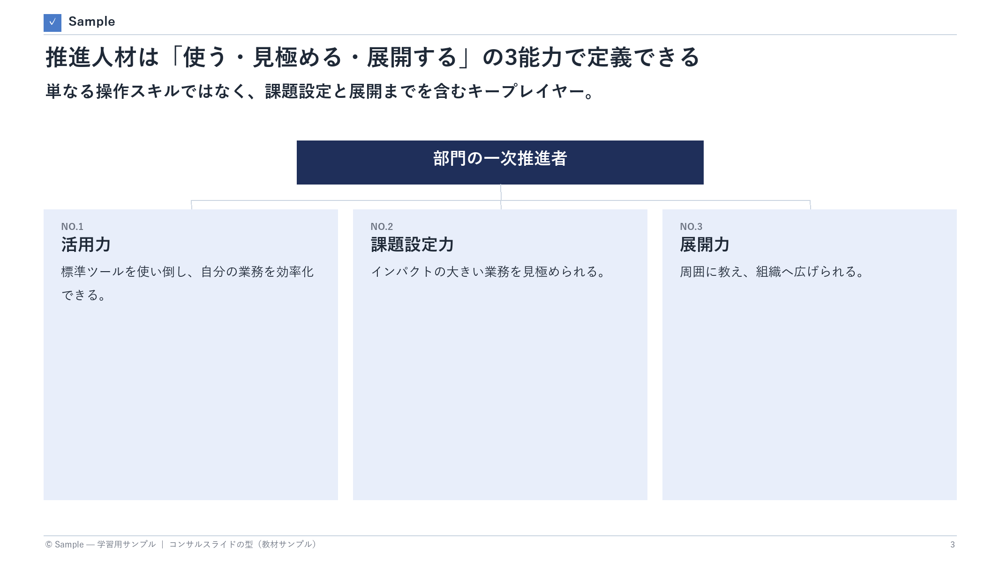
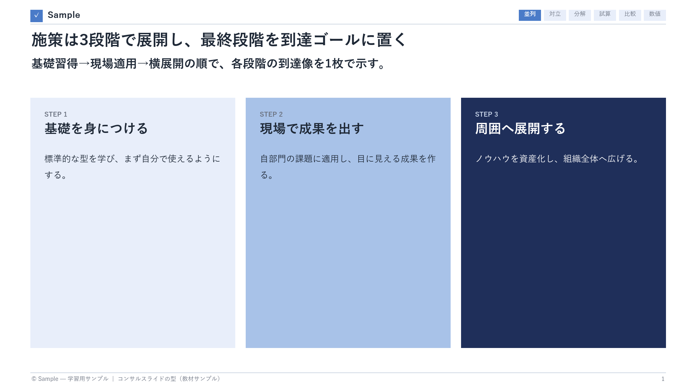
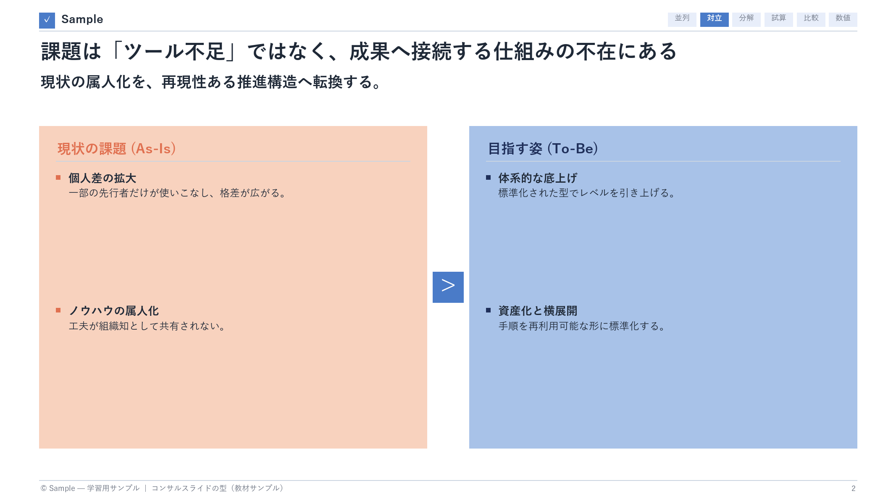
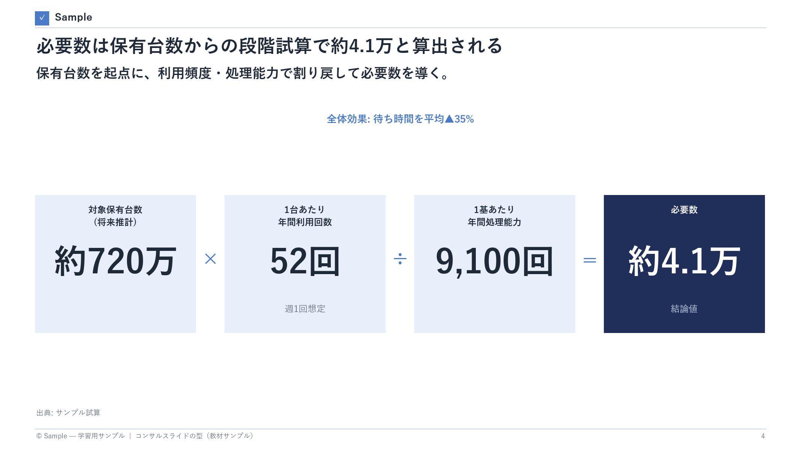
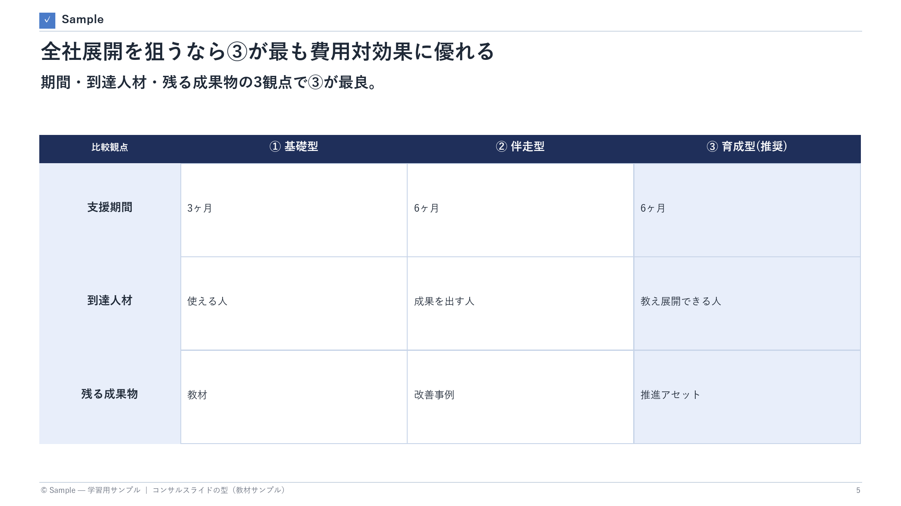
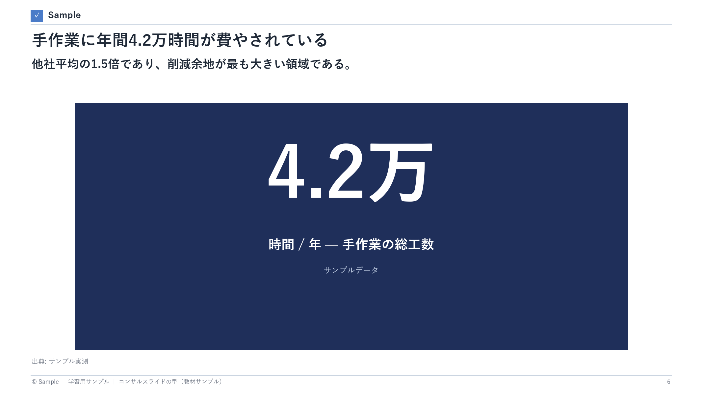

実務ナビ型
ブランド1色＋進捗タブで「迷わせない」。結論タイトルと現在地ナビを徹底し、プレゼンとして読みやすい。装飾より動線重視。
Office・資料作成
トップコンサル／官公庁向け調査報告デッキを観察して抽出した、「読まれて伝わる」スライドの普遍ルール。タイトルの書き方から配色・出典の規律まで、後から再現できる形でまとめた。図はすべて、原則を体現するために自作したサンプルスライド（実在資料の転載ではない）。
作風の違う各社デッキでも、繰り返し守られていた規律。
各原則を体現する自作サンプルスライドつき。
見出しを「お題」で終わらせない。タイトルだけ読めば結論が取れる状態にし、その下のリード文で補強する。下は「タイトル（結論）＋リード（補強）＋3本柱（根拠）」のピラミッド型。

選択肢やステップを並べるときは、薄→中→濃の単色相グラデで「標準→中間→推奨／到達」を表現する。色数を増やさずに視覚的な序列が立つ。

現状の課題と目指す姿を左右に置き、暖色（課題側）と寒色（あるべき側）で対比する。「何を、どこへ動かすのか」が一目で伝わる。

結論の数値を、入力から段階的に割り戻して示す。各段を演算子でつなぎ、最終値だけを濃色で強調する。「どう計算したか」を読み手が追える。

比較表では推奨する列／行を1つだけ目立たせる。読み手が「どれを選ぶべきか」で迷わない。強調はあくまで1要素に絞る。

一番伝えたい1つの事実は、巨大な数値で画面中央に置く。タイトルで意味づけし、数値で記憶に残す。

作風が違っても、骨格はほぼ共通。
一般によく知られた2つの作風の対比（理解のための一般論）。
ブランド1色＋進捗タブで「迷わせない」。結論タイトルと現在地ナビを徹底し、プレゼンとして読みやすい。装飾より動線重視。
モノクロ基調＋巨大なヒーロー数値＋番号付き脚注。一次ソース名・年・算定根拠まで開示し、格調と出典厳密性で説得する。
本文を読むのに必要な言葉だけ。
「お題」ではなく結論を述べる見出し。タイトルだけで主張が伝わる。
事実から導く含意。スライドはこれを言い切る。
結論を頂点に、MECEな根拠で支える論理構造（Barbara Minto）。
薄→中→濃の単色濃淡で序列（標準→中間→推奨）を表す手法。
結論の数値を、入力から段階的に割り戻して見せる試算レイアウト。
全頁に置く章トラッカー。読者の現在地を常に示す。